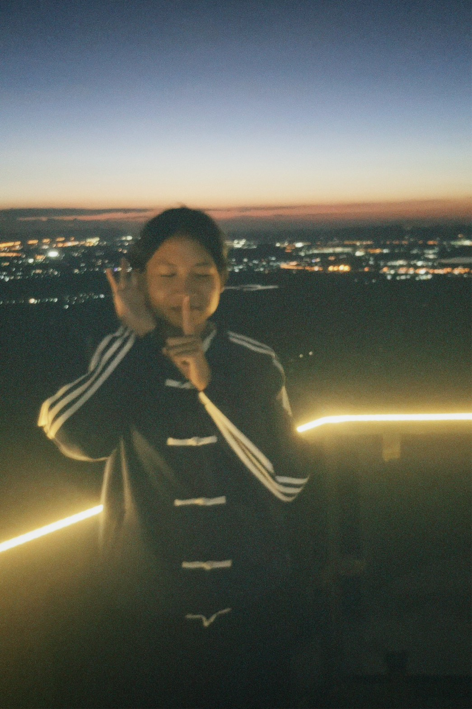

ชื่อเล่น : ข้าวหอม
นักเรียนชั้นมัธยมศึกษาปีที่ 2/16
ยินดีต้อนรับเข้าสู่เว็บไซต์ประวัติส่วนตัวของฉัน
ชื่อ-นามสกุล : เด็กหญิง จารุวรรณ รื่นฤดี
ชื่อเล่น : ข้าวหอม
วันเกิด : 24 สิงหาคม พ.ศ.2555
อายุ : 14 ปี
สัญชาติ : ไทย
เชื้อชาติ : ไทย
ศาสนา : พุทธ
กรุ๊ปเลือด : O
ที่อยู่ : ตำบลบ้านใหม่ อำเภอปากเกร็ด จังหวัดนนทบุรี ถนนศรีสมาน
คติประจำใจ :ศิลปะยืนยาว สมาธิสั้น
อนุบาล
โรงเรียน มารีพิทักษ์อุดรธานี
โรงเรียน อนุบาล เรวดี
ประถม
โรงเรียน ชลประทานวิทยา
มัธยม
โรงเรียนนวมินทร์ทราชินูทิศ หอวังนนทบุรี
วาดรูป เล่นกีตาร์ เต้น
1. งานอดิเรกและความสนใจเต้น วาดรูป เล่นเกม เล่นกีตาร์
2. เป้าหมายในอนาคตยื่นPortfolioหรือสอบเข้าคณะสถาปัตยกรรมหรือมัณฑนศิลป์ของมหาลัยจุฬา มหาลัยเชียงใหม่ มหาลัยศิลปกร เมื่อจบแล้วหางานในสายที่เรียนที่สามารถสร้างงาน สร้างเงินได้
Facebook :จารุวรรณ รื่นฤดี
Instagram : Email :kaohom3303@gmail.com โทรศัพท์ : 095-858-8719